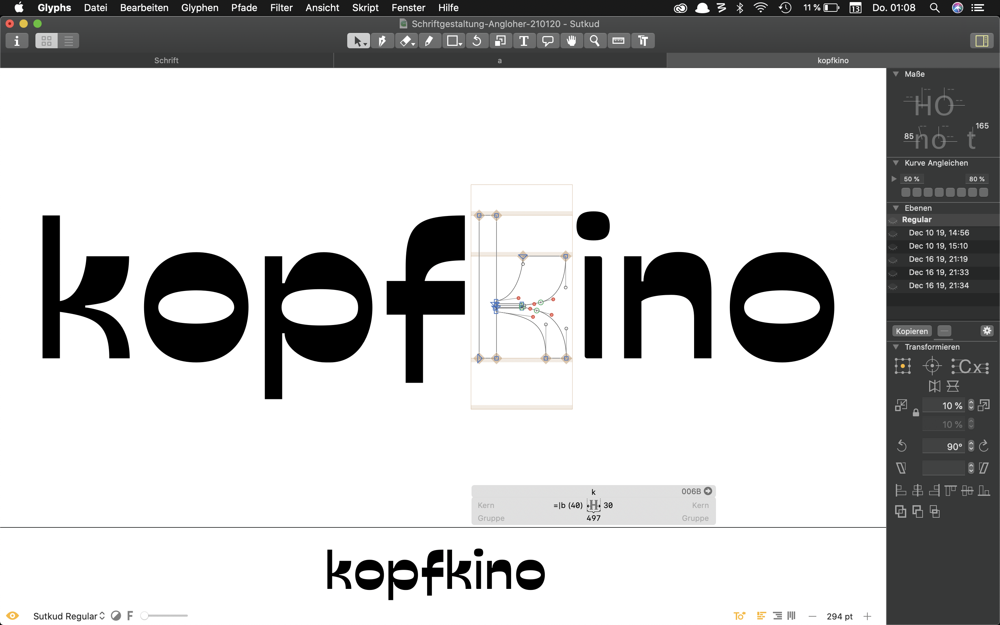

Typedesign
Sutkud


Sutkud
Sutkud is a reverse-contrast font that was created in the Software Glyphs. The letter stress is reversed from the norm and appears in an attention-grabbing display design. The homogeneously light-dark contrast, inspired by shadow and light focusing on the negative space, played an essential role in the implementation.